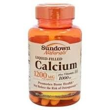

Nutrition
Taking vitamins are good to help your body work properly. Vitamins and minerals are important nutrients, such as calcium and vitamin C. Below are healthy vitamins and foods that are in essential in your body.
Healthy Plates and Meals

Vitamins
Vitamin A- healthy vision and skin.
Vitamin b1(thiamin)- helps body metabolize.
Vitamin b2(riboflavin)- protects body cells from free radicals.
Vitamin b3(niacin)- lowers risk of cardiovascular disease.

Vitamin b5(pantothenic acid)- for hormone production, immune system, and producing energy.
Vitamin b6(pyridoxine)- produces myelin.
Vitamin b7(biotin)- healthy skin, hair, nails, and cells.
Vitamin b9(folate- the nervous system.
Vitamin B12(cobalamin)- healthy red blood cells and nerve cells.
Vitamin C- growth and repair in body tissue.
Vitamin D- healthy bones and optimal immune function.
Vitamin E- free radicals and can boost the immune system.
Vitamin K- helps the blood to clot and prevent excessive bleeding, and keeps your heart healthy and your bones strong.
Choline- liver function, nerve function, and muscle movement.